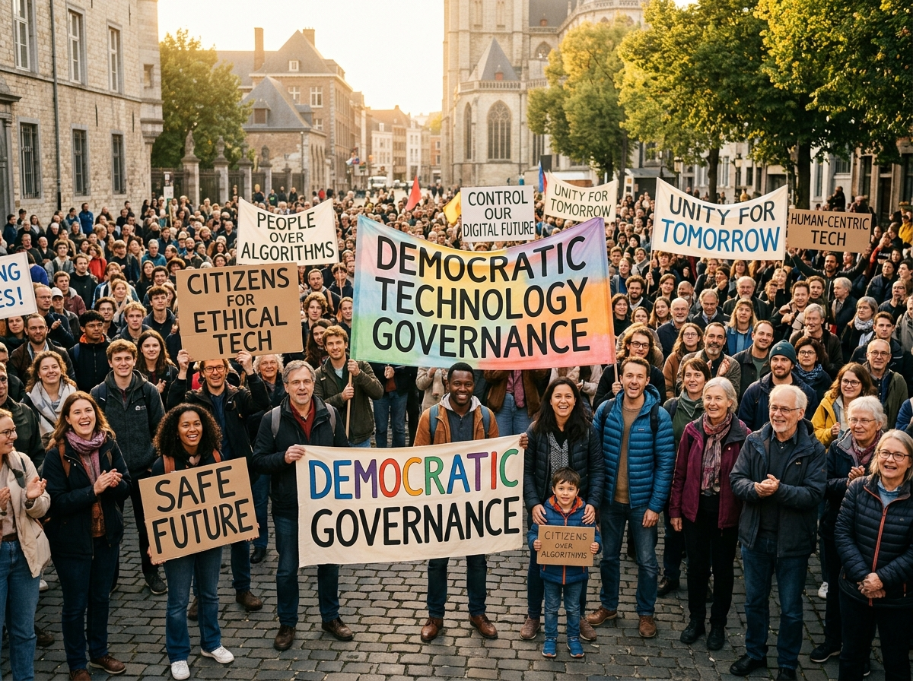

PauseAI Slovensko spája vedcov, vývojárov, rodičov a občanov, ktorí žiadajú zodpovedné tempo, medzinárodný bezpečnostný dohľad a demokratickú kontrolu pred trénovaním najsilnejších modelov.

Umelá inteligencia prináša obrovský potenciál v medicíne, vzdelávaní či vede. Zároveň však komerčné preteky tlačia vývojárov do vypúšťania stále silnejších modelov bez toho, aby rozumeli ich vnútornému fungovaniu.
V letectve, jadrovej energetike či farmácii je nemysliteľné nasadiť technológiu skôr, ako prejde prísnou certifikáciou. Pri najsilnejších AI systémoch takýto mechanizmus stále chýba.
PauseAI Slovensko žiada priestor na dôkladné vedecké overenie, etické vyhodnotenie a stanovenie jasných pravidiel demokratickými inštitúciami.
Naše požiadavky vychádzajú z odporúčaní popredných výskumníkov a princípov medzinárodného práva.
Po vzore Medzinárodnej agentúry pre atómovú energiu (IAEA) potrebujeme nezávislý globálny orgán, ktorý audituje dátové centrá a monitoruje tréning modelov na hranici schopností.
Vývoj a trénovanie novej generácie superinteligentných modelov musí byť pozastavené, kým vedecká komunita nepreukáže spoľahlivé metódy zarovnania (alignment) a kontroly.
Nasadenie modelov do kritickej infraštruktúry a verejného priestoru musí podliehať verejnému posúdeniu dopadov na prácu, demokraciu a bezpečnosť občanov.
Bezpečnosť umelej inteligencie nie je abstraktná teória — dotýka sa každodenného života každého z nás.
Riziko straty kontroly nad autonómnymi systémami označujú špičkoví vedci za závažnú civilizačnú hrozbu porovnateľnú s pandémiami či jadrovou vojnou.
Neriadený a unáhlený nástup umelej inteligencie môže otriasť trhom práce skôr, ako vzdelávacie a sociálne systémy stihnú reagovať.
Generatívne dezinformácie, deepfake obsah a cielená automatizovaná manipulácia môžu fatálne podkopať dôveru vo voľby a slobodnú diskusiu.
Chceme technológie, ktoré pomáhajú liečiť choroby, zefektívňujú energetiku a obohacujú ľudský potenciál — pod dohľadom verejnosti.
Každý podpis má váhu pri vyjednávaní s európskymi a národnými zákonodarcami. Podporte požiadavku na medzinárodnú reguláciu a nezávislý bezpečnostný audit.
Transparentné doručenie: Údaje z formulára putujú priamo tímu slovenských koordinátorov na adresu slovensko@pauseai.info.
Keby formulár nefungoval alebo preferuješ priamy kontakt, napíš nám priamo: slovensko@pauseai.info ✉️
Zaberie to menej než 30 sekúnd. Formulár je nezáväzný.